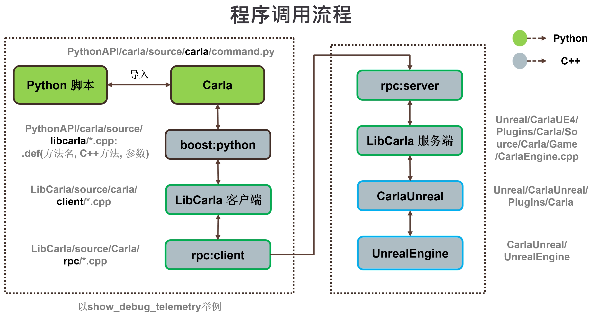

构建系统¶
本文档是一个正在进行的工作，这里仅考虑 Linux 构建系统。
设置中最具挑战性的部分是编译所有依赖项和模块，使其与 a) 服务器端的虚幻引擎 和 b) 客户端的 Python 兼容。
目标是能够从单独的 Python 进程调用虚幻引擎的函数。

在 Linux 中，我们使用 clang-8.0 和 C++14 标准编译 Carla 和所有依赖项。然而，我们根据代码的使用位置来链接不同的运行时 C++ 库，因为所有将与虚幻引擎链接的代码都需要使用 libc++ 进行编译。
设置 ¶
命令
make setup
获取并编译依赖项
- llvm-8 (libc++ and libc++abi)
- rpclib-2.2.1 (twice, with libstdc++ and libc++)
- boost-1.72.0 (headers and boost_python for libstdc++)
- googletest-1.8.1 (with libc++)
LibCarla ¶
使用 CMake 编译（最低版本需要 CMake 3.9）。
命令
make LibCarla
两种配置：
| 服务器 | 客户端 | |
|---|---|---|
| 单元测试 | 是 | 否 |
| 要求 | rpclib, gtest, boost | rpclib, boost |
| 标准运行时 | LLVM's libc++ |
默认 libstdc++ |
| 输出 | 头文件和carla_server.lib |
carla_server.lib |
| 需要 | Carla plugin | PythonAPI |
CarlaUE4 和 Carla 插件 ¶
两者均使用虚幻引擎构建工具在同一步骤进行编译。它们需要 UE4_ROOT 环境变量。
命令
make CarlaUE4Editor
要启动虚幻引擎的编辑器，请运行
make launch
编译 0.9.15 时候出现carla/Unreal/CarlaUE4/Plugins/CarlaTools/Source/CarlaTools/Private/Online/CustomFileDownloader.cpp(11): fatal rror C1083: 无法打开包括文件: “OSM2ODR.h”: No such file or directory
解决：将0.9.14build中的carla\Build\osm2odr-visualstudio复制过来。
PythonAPI ¶
0.9.12+ 版本 ¶
使用 Python 的 setuptools ("setup.py") 编译。 目前需要在机器上安装以下软件：Python, libpython-dev, 和
libboost-python-dev, pip>=20.3, wheel, 和 auditwheel。
命令：
make PythonAPI
创建两个文件，每个文件包含客户端库并对应于系统上支持的 Python 版本。一个文件是 .whl 文件，另一个文件是 .egg 文件。这允许选择两种不同的、互斥的方式来使用客户端库。
A. .whl 文件
.whl使用以下命令安装：pip install <wheel_file>.whl无需像以前版本或
.egg文件中那样直接在脚本中导入库路径 (请参阅 __0.9.12_之前的版本_);import carla就足够了。B. .egg 文件
请参阅 0.9.12 之前的版本 了解更多详细信息。
0.9.12 之前的版本 ¶
使用 Python 的 setuptools ("setup.py")编译。 目前需要在机器上安装以下软件： Python, libpython-dev, 和
libboost-python-dev。
命令
make PythonAPI
它创造了两个 "egg" 包
PythonAPI/dist/carla-X.X.X-py2.7-linux-x86_64.eggPythonAPI/dist/carla-X.X.X-py3.7-linux-x86_64.egg
通过将其添加到系统路径，可以将该包直接导入到 Python 脚本中。
#!/usr/bin/env python
import sys
sys.path.append(
'PythonAPI/dist/carla-X.X.X-py%d.%d-linux-x86_64.egg' % (sys.version_info.major,
sys.version_info.minor))
import carla
# ...
或者，可以使用 easy_install 安装
easy_install2 --user --no-deps PythonAPI/dist/carla-X.X.X-py2.7-linux-x86_64.egg
easy_install3 --user --no-deps PythonAPI/dist/carla-X.X.X-py3.7-linux-x86_64.egg